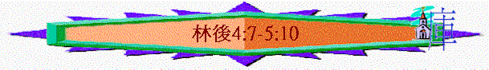

|
神 的 用 人 |
||||||||
|
引言與頌讚 |
誠實的講者 |
新約的執事 |
大能的瓦器 |
基督的使者 |
真神的用人 |
捐輸的職事 |
有權能使徒 |
末了的話語 |
|
1:1-11 |
1:12-2:17 |
3:1-4:6 |
4:7-5:10 |
5:11-21 |
6-7 |
8-9 |
10:1-13:10 |
13:11-14 |
三
.大能的瓦器（4:7－5:10 )∼此段提及很多「身上」（body ）、「外體」、「地上的帳棚」、「身體」、「本身」（body ）等類似字眼
1
.有能力－－－超越本質（4:7-12)A
「我們有這寶貝放在瓦器裡，要顯明這莫大的能力是出於神，不是出於我們。」4:7
∼以前的中東人，常將寶貝放在瓦器中收藏在地底下（防止被盜竊）
∼「寶貝」指前文的耶穌，「瓦器」指保羅與同工
B
.得能力的事件「我們四面受敵，卻不被困住；心裡作難，卻不至失望；」4:8
「我們從前就是到了馬其頓的時候，身體也不得安寧，周圍遭息難，外有爭戰，內有懼怕。」7:5
「但有些猶太人從安提阿和以哥念來，桃唆眾人，就用石頭打保羅，以為他是死了，便拖到城外。門徒正圍著他，他就起來，走進城去。第二天，同巴拿巴往特庇去，」徒14:19
「他們就把他帶到亞略巴古，說：「你所講的這新道，我們也可以知道嗎？」因為你有些奇怪的事傳到我們耳中，我們願意知道這些事是什麼意思。」（雅典人和住在那裡的客人都不顧別的事，只將新聞說說聽聽。）保羅站在亞略巴古當中，說：「眾位雅典人哪，我看你們凡事很敬畏鬼神。]我遊行的時候，觀看你們所敬拜的，遇見一座壇，上面寫著『未識之神』。你們所不認識而敬拜的，我現在告訴你們。創造宇宙和其中萬物的神，既是天地的主，就不住人手所造的殿，也不用人手服事，好像缺少什麼；自己倒將生命、氣息、萬物，賜給萬人。他從一本（本：有古卷是血脈）造出萬族的人，住在全地上，並且預先定準他們的年限和所住的疆界，」徒17:19-26
「夜問，主在異象中對保羅說：「 不要怕，只管講，不要閉口，有我與你同在，鈴沒有人下手害你，因為在這城裡我有許多的百姓。」」徒18:9
-10∼「四面受敵」－－保羅被同胞、外邦人追逼，但卻不被困住
∼「心裡作難」－－似乎走投無路，但卻不失望
∼「遭逼迫」－一即使保羅人生有很多逼迫，但他仍不被丟棄，有主同在的應許
C
.得能力的原因「身上常帶著耶穌的死，使耶穌的生也顯明在我們身上。因為我們這活著的人是常為耶穌被交於死地，使耶穌的生在我們這必死的身上顯明出來。這樣看來，死是在我們身上發動，生卻在你們身上發動。」4:10-12
∼保羅在進一步解釋為何有寶貝(主)在瓦器中，產生能力
a
.因耶穌的死∼信主的人常帶著耶穌的死，因信徒已預計信主後，會受逼迫，信徒會為耶穌被人捉拿，被人交在死地，所以保羅為主作工時，要死（要為主受苦）的事在他們身上發動及運行
∼他們為主受苦與主同死的心志也成為他的力量去面對逼迫
b
.因耶穌的生∼耶穌今天仍活著，神賜人在苦難中有生命力，神更新人的生命，信徒雖帶著耶穌的死，但耶穌的能力、忍耐、生命也從苦難中顯出來，而保羅卻在受苦下為主作工，也令哥林多人得著耶穌更新的生命，所以生卻在哥林多人中發動
2
.有復活－－－超越死亡（4:13-15)A
「但我們既有信心，正如經上記著說：「我因信，所以如此說話。迎我們也信，所以也說話。」4:13
「我要在耶和華面前行活人之路。我因信，所以如此說話；我受了極大的困苦。」詩116:9
∼詩116 的作者在危難中信靠神，他信在極大困苦中，仍在神前可行活人之路
B
.復活的肯定「自己知道那叫主耶穌復活的，也鈴叫我們與耶穌一同復活，並且叫我們與你們一同站在他面前。」4:14
a
.神叫主復活c
.保羅與信徒一同在主面前C
.冒死的原因∼保羅冒死的原因，除了因信有復活後，也因為以下原因
「凡事都是為你們，好叫恩惠因人多越發加增，威謝格外顯多，以致榮耀歸與神。」4:15
a
.為信徒得益處c
.神得榮耀3
.有榮耀－－－超越苦楚（4:16-18)∼保羅肉身上雖為主受苦，但他仍可以不喪膽，除了因為有復活外，也因為有無比的榮耀
A
.外體的毀壞與內心的更新「所以，我們不喪膽。外體雖然毀壞，內心卻一天新似一天。」4:16
∼人的外體會有衰殘、受損、朽壞的時刻，但信主的人內心卻有耶穌的生命與盼望，一天新似一天的
B
.至輕的苦楚與無比的榮耀「我們這至暫至輕的苦楚，要為我們成就極重無比、永遠的榮耀。」4:17
∼信徒將會得著極重（相對至輕的，如名貴大卡數鑽石般有份量）及無比永遠（相對至暫）的榮耀，若將將來的榮耀比較，保羅的苦楚可算是至暫至輕的
C
.暫時的看見與永遠的盼望「原來我們不是顧念所見的，乃是顧念所不見的；因為所見的是暫時的，所不見的是永遠的。」4:18
∼現在我們所見到的是暫時，是會過去的，所以保羅不是顧念所見到的事，他們顧念的是見不到永遠的榮耀
4
.有信心－－－超越懼怕（5:1-10)∼5:6及5:8提及2 次「坦然無懼」，保羅與同工能在地上過坦然無懼的生活，因為他們有一份看不見的信心，因這心也產生以下「知道」及「曉得的」事：
A
a
「我們原知道，我們這地上的帳棚若拆毀了，鈴得神所造，不是人手所造，在天上永存的房屋。我們在這帳棚袒歎息，深想得那從天上味的房屋，好像穿上衣服；」5:1
-2
∼地上的帳棚比喻自己的身子，有一日會被拆毀（死去），但信主的人鈴得神所造永存的房屋
b
.穿上新衣「倘若穿上，被過見的時候就不至於赤身了。我們在這帳棚裡歎．息勞苦，並非願意脫下這個，乃是願意穿上那個，好叫這鈴死的被生命吞滅了。」5:3
-4
∼死去的身子如脫去舊衣，穿上新衣一樣，不是赤身的，是神給予更新的身體
c
.聖靈憑據「培植我們的就是神，他又賜給我們聖靈作憑據（原文為此，作質）。5:5
∼「培植」指神作成「新身體」的事：r 憑據」即憑質或抵押
B
.信能與主同住a
「所以，我們時常坦然無懼，並且曉得我們住在身內，便與主相離。」5:6
∼住在身內時，我們就有限制，不能直接見主，與主相遇
b
.信心的看見「因我們行事為人是憑著信心，不是憑著眼見。」5:7
c
.同住的渴望「我們坦然無懼，是更願意離開身體與主同住。」5:8
∼信徒不怕死亡，不怕肉身的痛苦，因為他們更渴望離開身體，與主同住
C
.信要向主交賬a
「所以，無論是住在身內，離開身外，我們立了志向的喜悅。」5:9
b
.因要向主交賬「因為我們眾人必要在基督臺前顯露出來叫各人按著本身所行的，或善或惡受報。」5:10
「你這個人，為什麼論斷弟兄呢？又為什麼輕看弟兄呢？們都要站在神的臺前。」羅14:10
∼信徒雖然不會落火湖，但要到主的臺前交賬